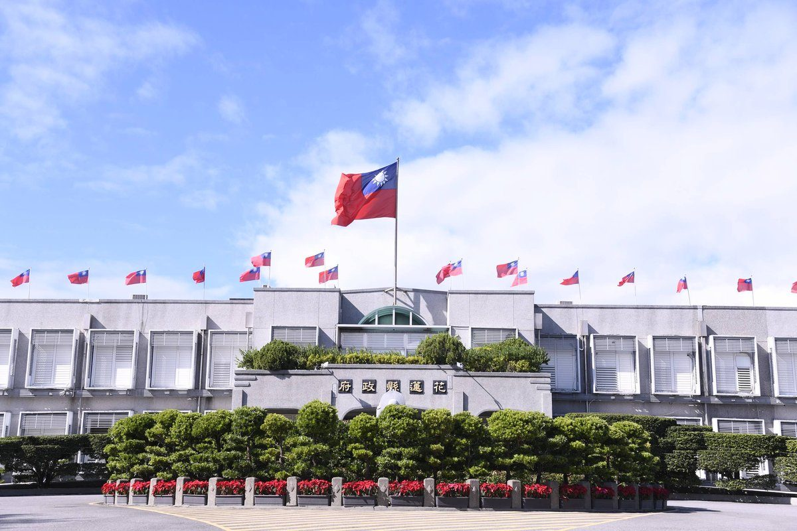

花蓮縣府駁善款濫用傳言 籲選舉勿抹黑基層

可樂電子報小編/編輯
針對11月26日特定候選人刊登於報紙的競選廣告，以「濫用救災愛心善款」等問句質疑縣政，花蓮縣政府表示，網路上關於善款運用的不實傳聞，縣府已多次公開澄清；相關明細皆公告在社會處官網「花蓮縣重大災害民間賑災捐款專戶」頁面，資訊透明度高於各級政府，網傳謠言的事實查核與澄清也都可在官網查到，歡迎鄉親直接查閱。

縣府指出，無論是從過去0206花蓮地震、0403花蓮地震，到0923馬太鞍溪堰塞湖災害，會議記錄及收支皆公開在網站上。至於廣告所列工程經費、宮廟補助、學校營養午餐、鄉鎮市建設經費及對待業者等質疑，縣府過去也已多次對外說明，呼籲勿為了選舉一再傳播不實言論，讓公共討論失焦。
花蓮縣政府強調，災害的各項工作，無論是救災、災後訪視、協助受災家庭申請補助、道路橋梁復建，靠的是基層公務同仁、鄉鎮市公所、村里長、志工及民間團體共同投入；花蓮每一項重建與成果，背後都有許多人付出的心力，不是單一單位或個人的功勞，也不該被選舉語言一筆抹煞。
縣府表示，民主選舉的價值，在於讓不同意見充分表達，讓鄉親比較政見、選擇未來，而不是以片段資訊拼湊指控；縣府呼籲各界就事論事，勿為一時選舉抹黑基層，抹煞所有為花蓮努力的人，也讓公共討論回到事實與政策本身，共同維護花蓮得來不易的重建成果。
縣府重申，善款運用與災後重建資訊均依法公開，歡迎鄉親與外界到官網查閱會議記錄及收支明細；若有疑義，也可向縣府相關單位查證。縣府會持續以公開透明的態度回應各界疑問，讓每一分愛心都被妥善運用，陪伴受災家庭走過重建的路，也讓花蓮在災後一步步站穩腳步。
🌟 掌握花蓮在地第一手資訊・歡迎訂閱追蹤
深度紀實報導、在地精采影音專題，第一時間接收最新消息！